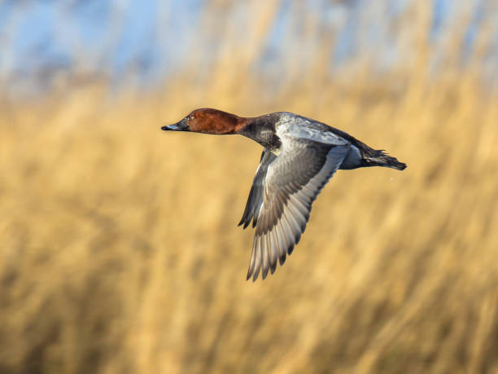
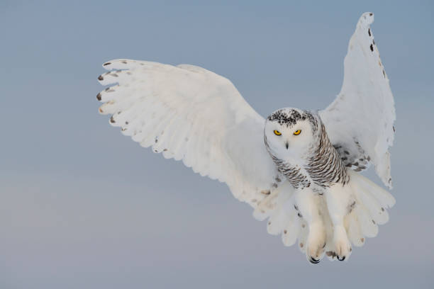

Lintujen rooli ekosysteemissämme on suuri. Lue lisää siitä, miten sinä voit auttaa.


Lähes kolmasosa Suomessa pesivistä lintulajeista on luokiteltu uhanalaisiksi, ja niitä uhkaa sukupuutto. Lajeja on enemmän väheneviä, kuin runsastuvia. Lintukato johtuu pääasiassa ihmisen toiminnasta. Tämä on hälyttävä merkki siitä, että luonnon monimuotoisuuden vähenemistä ei olla onnistuttu pysäyttämään.